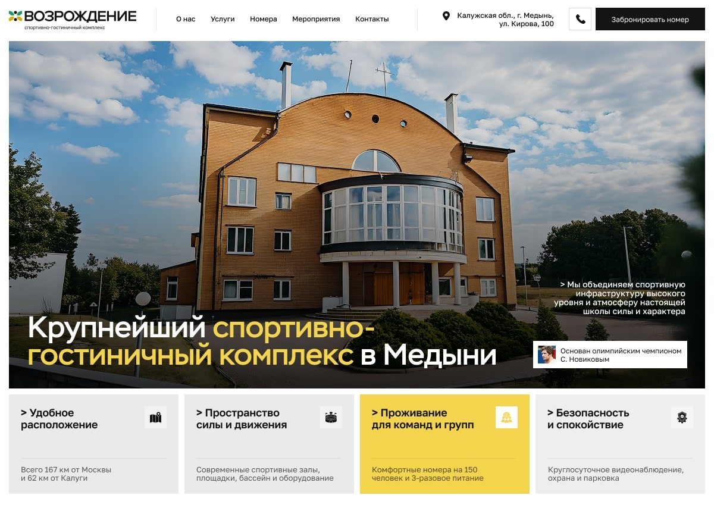

К нам обратился представитель спортивно-гостиничного комплекса «Возрождение» — уникальной площадки в городе Медынь, основанной при участии Сергея Петровича Новикова, первого советского чемпиона Олимпиады по дзюдо и основателя универсального боя.
Рекомендация пришла от другого нашего клиента, также связанного с универсальным боем. У комплекса не было сайта — вся связь с потенциальными клиентами шла по телефону. Главной задачей стало: создать первый официальный сайт, который бы представлял возможности комплекса, был адаптивен, прост и понятен для разных целевых аудиторий.
«Возрождение» — спортивно-гостиничный комплекс, сочетающий инфраструктуру для соревнований и тренировок с комфортным размещением. Здесь регулярно проходят сборы, турниры, мероприятия, а также культурные события. Комплекс соответствует ГОСТ Р 55529-2013 и может разместить до 150 человек.
Клиент предпочитал, чтобы бронирование происходило по телефону — через прямой звонок в рецепцию. Мы предложили дополнительно внедрить форму обратного звонка, интегрированную с Telegram, чтобы упростить подачу заявок и не менять привычный порядок взаимодействия. Интеграция была выполнена бесплатно.
Кроме того, у клиента не было брендбука, предпочтений по дизайну и структуры сайта. Мы самостоятельно проанализировали рынок, выбрали несколько референсов и предложили лаконичную, визуально чистую концепцию. Заказчику сразу понравился предложенный макет.
Контент был также структурирован нашей командой: из сырой информации, которую прислал клиент, мы подготовили понятные блоки и распределили их по логике пользовательского пути.
2 месяца от получения ТЗ до релиза.
Проект был реализован силами агентства IMPRO.pro — современного агентства цифровых коммуникаций и маркетинговых разработок.
Обсудим ваш проект и найдем оптимальное решение для вашего бизнеса
СВЯЗАТЬСЯ СО МНОЙ